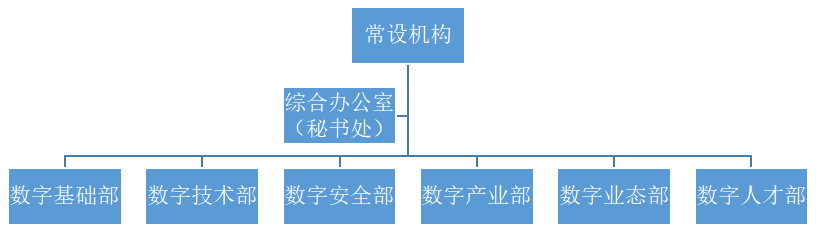

学术委员会
| 职位 | 姓名 | 单位 |
| 主任 | 陈金桥 | 中国信息通信研究院 |
| 副主任 | 冯耕中 | 西安交通大学 |
| 任保平 | 西北大学 | |
| 成员 | 邵明 | 复旦大学 |
| 闫德利 | 腾讯研究院 | |
| 魏延安 | 共青团陕西省委 | |
| 赵捧未 | 西安电子科技大学 | |
| 张鸿 | 西安邮电大学 | |
| 李鹏飞 | 西安邮电大学 | |
| 李永红 | 西安邮电大学 | |
| 郝渊晓 | 西安邮电大学 |
学术顾问团
| 研究院专家151人 | |
| 张鸿 | 西安邮电大学经管院院长 |
| 陈金桥 | 中国信通院副工程师 |
| 冯耕中 | 西安交大管理学院院长 |
| 任保平 | 西北大学经济管理学院院长 |
| 申江婴 | 新华网副总裁 |
| 闫德利 | 腾讯研究院互联网+秘书长 |
| 邓正宏 | 西北工业大学教授 |
| 别玲 | 中国联通西安研究院院长 |
| 冯家臻 | 陕西省社会科学学会研究员 |
| 郝渊晓 | 西安交通大学教授 |
| 李永红 | 西安邮电大学经管院副院长 |
| 赵捧未 | 西安电子科技大学教授 |
| 曾昭宁 | 西安石油大学教授 |
| 延彦斌 | 电信陕西分公司网络安全部长 |
| 苏锦旗 | 西安邮电大学经管学院博士 |
| 刘缨缨 | 西安商用数据实验室主任 |
| 郜随印 | 陕西省高级人才事务所所长 |
| 陈静 | 西安邮电大学经管院副院长 |
常设机构
1+X模式
成立了秘书处，已建成3000平米的研发基地；初步完成了研究院章程、组织机构、管理框架、人员分工的设立；初步制定了相关工作制度：包含财务制度、人事制度、对外合作制度、决策制度、会议制度、运营激励机制等。
开展了相关研究、培训及对外交流工作；与西安西安灵秀机电智能系统技术有限公司在数字基础领域展开合作研究，与西安东美信息科技有限公司、陕西优米数据技术有限公司在数字技术领域展开合作研究，与西安韵通网络科技有限公司等在数字安全展开合作研究，与西安数图行数据科技有限公司等合作展开数字业态领域研究，与祥云物流等公司合作展开数字产业研究，与陕西高级人才事务所有限公司合作展开数字人才领域研究，研究成果显著；与臻品炫合作，建立研究院公众号、网站、logo设计等，在数字文化建设方面取得一定成绩。
明确研究院的运营思路，初步研究制定了运营方案；成立了西部数字经济研究院专家团，成员包括陈金桥总工（中国信息通讯研究院副总工程师）、冯耕中教授（西安交通大学管理学院院长）、闫德利高工（腾讯研究院互联网+工业研究中心秘书长）、邓正宏教授（西北工业大学、省委网信领导小组专家咨询委员）、别玲高工（中国联通西安研究院院长、省委网信领导小组专家咨询委员）等省委宣传部讲师团成员、数字经济领域省内外专家100余人。与京东等企业联合成立数字经济协同创新研究中心等机构。